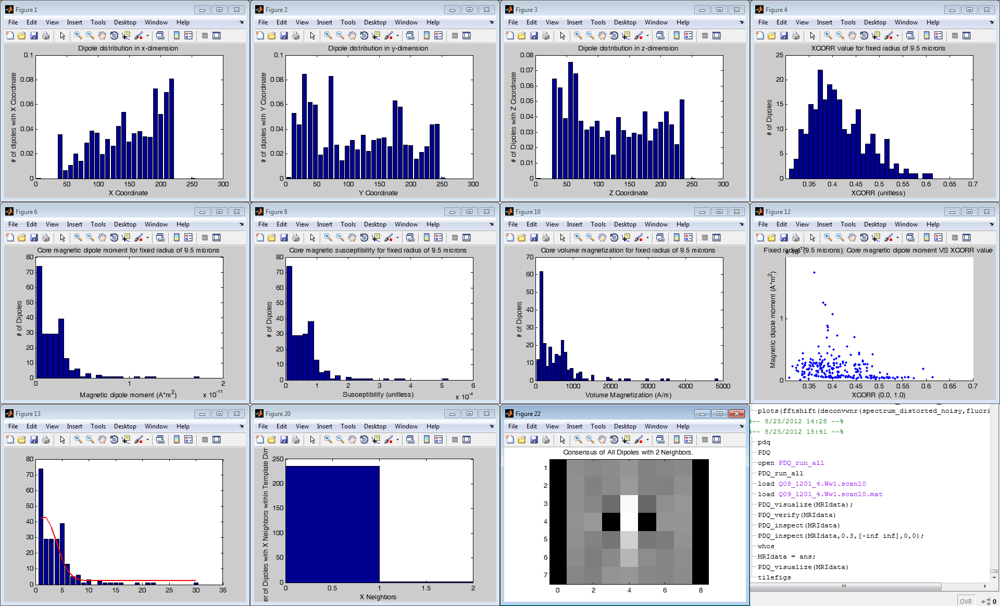

Unpublished results suggest that PDQ is effective at distinguishing contrast due to dipoles from other intrinsic sources of hypointensity.
Publications that describe PDQ's function and exhibit results include:
1) Sensitive and automated detection of iron-oxide-labeled cells using phase image cross-correlation analysis. (http://tinyurl.com/qzora7a)
2) Automated detection and characterization of SPIO-labeled cells and capsules using magnetic field perturbations (http://tinyurl.com/bvomtde)
PDQ was developed in Ahrens Lab, Pittsburgh NMR Center for Biomedical Research, Carnegie Mellon University. Financial support was provided in part by the U.S. National Institutes of Health.
Features:
- Detects magnetic dipoles in MRI datasets
- Estimates magnetic dipole moment for detected dipoles
- Eliminates unreasonable dipole moments (e.g., too-weak dipoles found in noise, or too-strong dipoles found in air bubbles)
- Automatically masks out noise by fitting magnitude image to Rician & Gaussian distribution
- Works with non-isotropic datasets
- Processes multiple datasets, comparing dipoles quantitatively across them
- Calculates number of dipoles vs. distance from regions of interest (ROIs)
- Experimental: Estimates iron content within magnetic dipoles
- Experimental: Registers dipoles between different time points
- Experimental: Estimates dipole movements between different time points
- Experimental: Estimate 'best-fit' sphere radius for each dipole.
- Advanced: Detection templates: Detect dipoles located off-center of voxel boundaries; Simulate randomly-distributed spins to eliminate aliasing.

Screenshot of MRI-PDQ software after analyzing sample to lcoate SPIO-labeled cells.